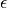

Formulation using the dielectric constant¶
Böttcher and Bordewijk, page 40:
For a it follows (see eqs. 8.182 in B&B):

For multiple relaxation times in a discrete case (8.187 in B&W):
Transformation to conductivity¶
Tarasov and Titov substitute  for  (they cite the
electrostatic analogy and the formulation for dielectric materials with
losses):
(they cite the
electrostatic analogy and the formulation for dielectric materials with
losses):